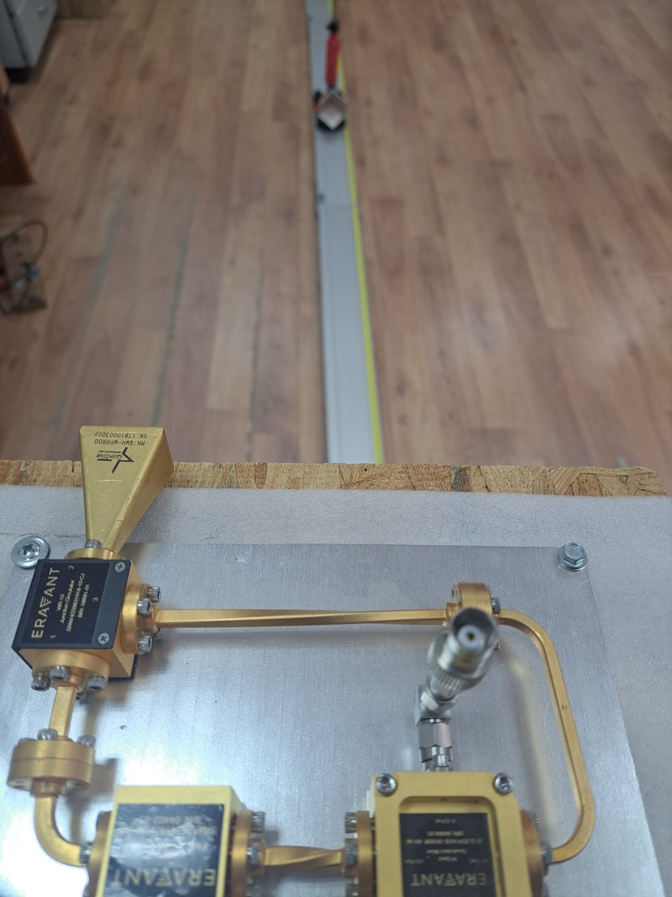
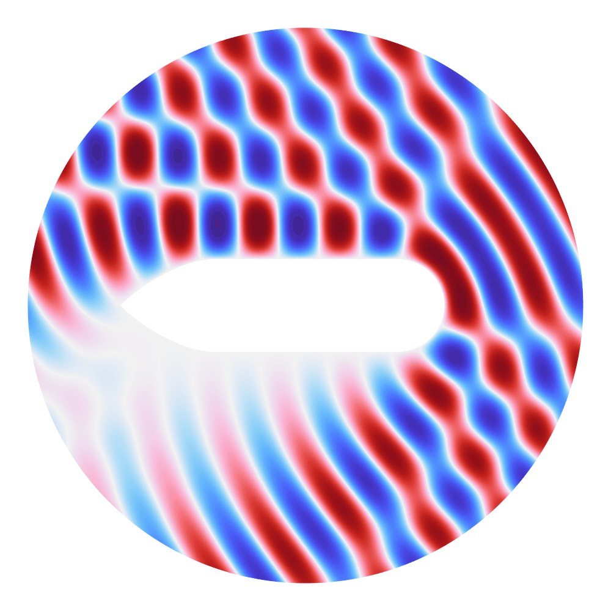
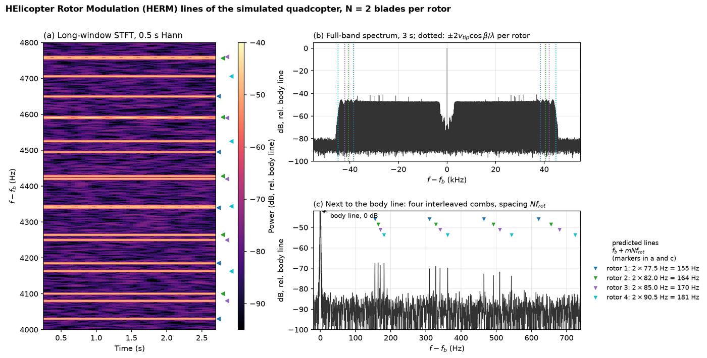
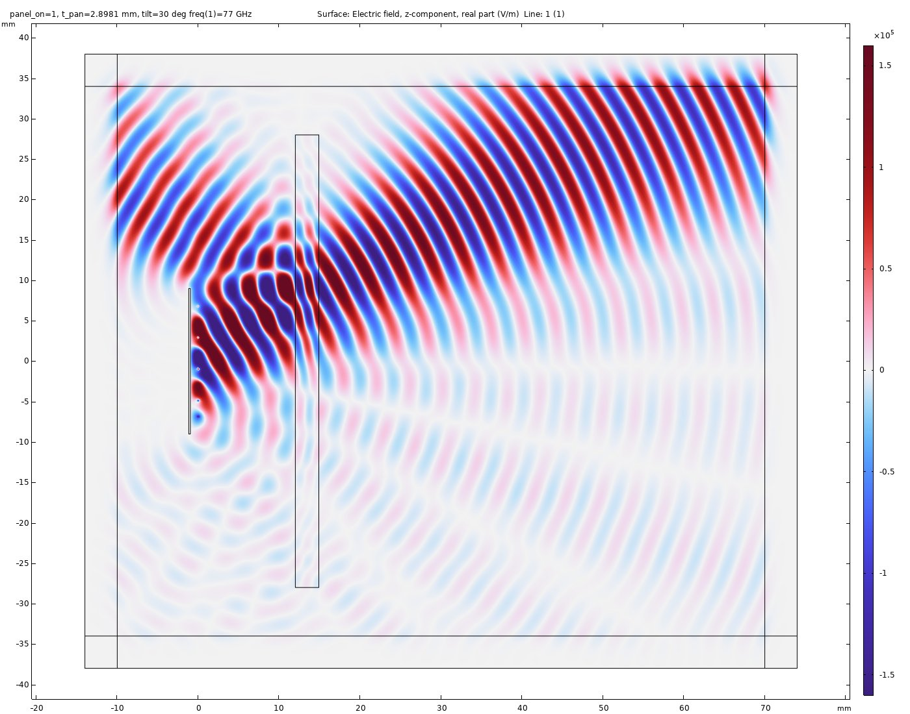
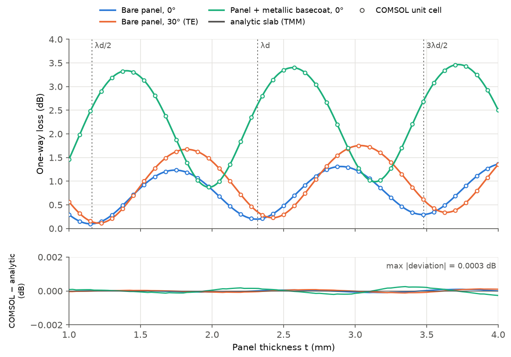

מכ״ם · חישה · עיבוד אותות
מערכות מכ״ם גלים מילימטריים ומיקרו־דופלר
ב־94 גיגה־הרץ, אורך הגל הקצר מספק רגישות גבוהה בפאזה ובדופלר לתנועות קטנות. אני מפתח מערכות מכ״ם W-band ועיבוד מיקרו־דופלר, הממיר אפנונים שמקורם בתנועה למאפיינים המשמשים לסיווג מטרות, בשילוב שערוך קלאסי ולמידת מכונה.

יישומים
אותה שרשרת חישה ועיבוד משמשת למגוון בעיות חישה מרחוק, במחקרים שפורסמו ובעבודה שוטפת:
- גילוי רחפנים וסיווג מטרות באמצעות חתימות מיקרו־דופלר ומסווגי למידת מכונה, להפרדה בין רחפנים, כלי רכב ומטרות בעלות שטח חתך מכ״ם נמוך.
- מדידה מרחוק של גובה כלי רכב למניעת פגיעות בגשרים, מתוך היחס בין שני רכיבי דופלר (Sensors 2026).
- ניטור תקינות של טורבינות רוח ומכונות סובבות מתוך ספקטרום המיקרו־דופלר שלהן.
- חישת בני אדם: סימנים חיוניים וזיהוי דיבור מרחוק.

מיקרו־דופלר של רחפן בעל ארבעה רוטורים ב־94 גיגה־הרץ (סימולציה)
כל להב נע לסירוגין לעבר המכ״ם וממנו בזמן שהרוטור מסתובב, ולכן ההד מכיל הסטות דופלר עד מהירות קצה הלהב. בספקטרוגרמה בחלון קצר זה נראה כהבזקי להב אנכיים, אחד בכל פעם שלהב חוצה את הניצב לקו הראייה. בחלון ארוך אותו אות מתפרק למסרקים של קווי HERM (helicopter rotor modulation), במרווח של מספר הלהבים כפול קצב הסיבוב.

המודל סוכם את ההחזרים ממפזרים נקודתיים לאורך להבים קשיחים (מכ״ם CW, רוטורים ב־4650 עד 5430 סל״ד). דופלר הקצה, מחזור ההבזקים ומרווח הקווים מתאימים לביטויים הקינמטיים בצורה סגורה, וזו בדיקה פנימית של המודל. כיפוף הלהבים ומדידות ב‑W-band מופיעים במאמר שלנו ב‑Sensors 26, 4851 (2026).
מכ״ם 77 גיגה־הרץ מאחורי לוח פגוש (COMSOL)
מכ״ם רכב מותקן מאחורי פגוש מפלסטיק, והלוח מתנהג כשכבה דיאלקטרית. כשהעובי שלו הוא כפולה של חצי אורך גל בתוך הפלסטיק, ההחזרים משתי הפאות מבטלים זה את זה והגל עובר בהפסד קטן. בעובי אחר חלק מההספק חוזר אל המכ״ם. ב־77 גיגה־הרץ אורך הגל בלוח (פרמיטיביות יחסית 2.82) הוא 2.32 מ״מ, ולכן העוביים המותאמים הם 1.16, 2.32 ו־3.48 מ״מ.


המודל דו־ממדי, לקיטוב אחד (שדה חשמלי מקביל ללוח), ללוח שטוח ולתדר יחיד. הפרמיטיביות של הלוח ושל הצבע נלקחה ממדידות של דגם בודד מכל חומר בעבודת גמר ב‑Chalmers University of Technology (E. P. Emilsson, 2017). ההתאמה לפתרון האנליטי מאמתת את הפתרון הנומרי, ונתוני החומר הם מקור אי־ודאות נפרד.
פרסומים נבחרים
- מתאם ספקטרוגרמות המתחשב בכיפוף לגילוי רחפנים ב‑W-band: מסגרת גילוי לא־קוהרנטית מבוססת פיזיקה. Sensors 26, 4851 (2026). doi:10.3390/s26154851
- מערכת מכ״ם גלים מילימטריים ב־94 גיגה־הרץ למדידת גובה כלי רכב מרחוק למניעת פגיעות בגשרים. Sensors 26, 1921 (2026). doi:10.3390/s26061921
- גילוי ואפיון דיבור בזמן אמת במכ״ם מיקרו־דופלר בגלים מילימטריים. Remote Sensing 17, 91 (2025). doi:10.3390/rs17010091
- מכ״ם גלים מילימטריים ברזולוציה גבוהה לגילוי ואפיון עצמים מהירים בזמן אמת. Electronics 13, 1961 (2024). doi:10.3390/electronics13101961
- סיווג מטרות ואיתור טווח מבוססי רשתות נוירונים במכ״ם CW מילימטרי. Remote Sensing 15, 4553 (2023). doi:10.3390/rs15184553
- גילוי נפילות ללא הדמיה מחתימות ספקטרליות במכ״ם מיקרו־דופלר. Applied Sciences 12, 8178 (2022). doi:10.3390/app12168178
- חתימות זמן־תדר של תנועות גפיים והערכת גובה במכ״ם מיקרו־דופלר. Sensors 20, 4660 (2020). doi:10.3390/s20174660
מחקר יישומי ויכולות טכניות
- עיבוד אותות מכ״ם וניתוח מיקרו־דופלר
- סיווג מטרות והערכת ביצועים
- סימולציית RCS ופיזור אלקטרומגנטי
- פיתוח אלגוריתמים ב‑MATLAB וניתוח נתוני ניסוי
- בחינת היתכנות ובניית הוכחת היתכנות
לשאלות טכניות ולשיתופי פעולה מחקריים: nezahb@ariel.ac.il